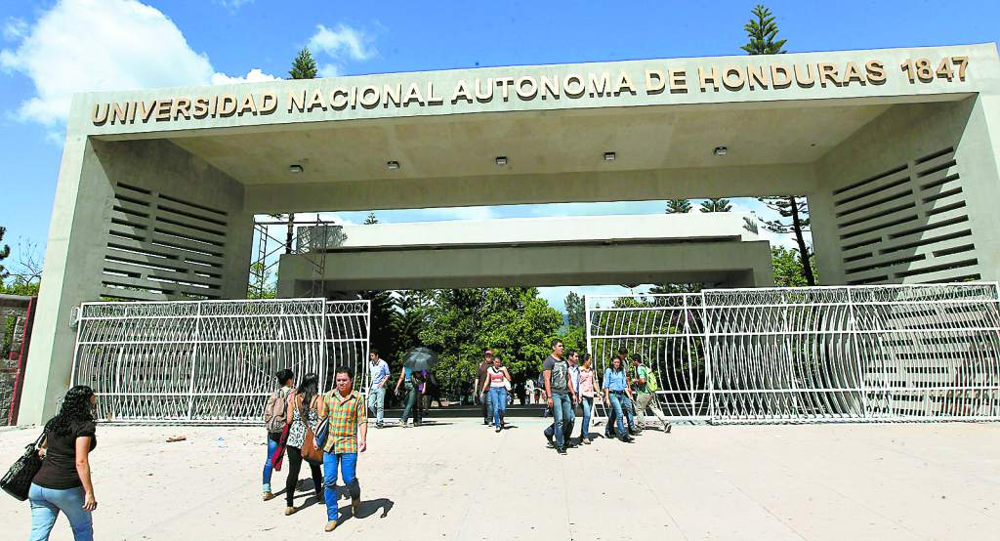

Universidad UNAH de Honduras
La Universidad Nacional Autónoma de Honduras: Pilar de la Educación Superior
La Universidad Nacional Autónoma de Honduras (UNAH) es la principal institución de educación superior en Honduras y una de las más prestigiosas de Centroamérica. Fundada en 1847, la UNAH ha desempeñado un papel fundamental en la formación de profesionales en diversas áreas del conocimiento, contribuyendo significativamente al desarrollo académico, científico y social del país.
Uno de los aspectos más destacados de la UNAH es su compromiso con la autonomía universitaria, lo que le ha permitido gestionar sus propios recursos y definir sus programas académicos con independencia. La universidad cuenta con una amplia oferta educativa que abarca desde carreras en ciencias sociales y humanidades hasta ingenierías y ciencias de la salud. Además, su enfoque en la investigación y la extensión comunitaria refuerza su papel en la generación de conocimiento y en la solución de problemas nacionales.
Sin embargo, la UNAH también enfrenta desafíos, como la falta de recursos, la sobrepoblación estudiantil y la necesidad de modernizar su infraestructura. A pesar de estos retos, sigue siendo una institución clave en la formación de líderes y profesionales que impactan positivamente en la sociedad hondureña.
En conclusión, la UNAH representa un bastión del conocimiento y la educación en Honduras. Su legado histórico y su papel en la transformación del país la consolidan como una institución indispensable para el desarrollo nacional y la construcción de un mejor futuro para las nuevas generaciones.

Inicio
Ejemplo de formulario de la UNAH